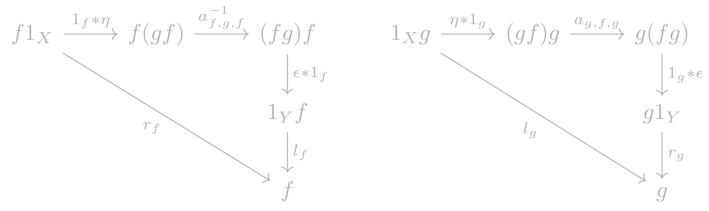

Internal Adjunctions in a Bicategory
Table of Contents
1 Idea
We can think of adjunctions as living in the 2-category \(\textbf{Cat}\), with their data being defined as properties of 1-cells and 2-cells, plus the triangle identities. We can abstract this notion to an arbitrary bicategory.
2 Definitions
An internal adjuntion \(f \dashv g\) in an bicategory B is a quadruple \(f,g,\eta, \epsilon\) consisting of:
- 1-cells: \(f:X \rightarrow Y\) and \(g:Y \rightarrow X\);
2-cells: \(\eta:1_X \rightarrow gf\) and \(\epsilon:fg \rightarrow 1_Y\).
These maps are subject to the following two commutative diagrams, that we call the left and right triangle identities:

We call \(f\) and \(g\) the left and right adjoints, respectively. The 2-cells \(\eta\) and \(\epsilon\) are called the unit and counit, respectively.
3 Examples
3.1 1-Adjunctions
Every adjunction from 1-category theory gives an example of an internal adjunction in \(\textbf{Cat}\), with associator and unitors being identity maps.
3.2 Duals
Every compact category, when regarded as a one object bicategory, has an internal adjunction given by duals. Saying that a one object bicategory has an internal adjunction is exactly saying that the monoidal category has duals.